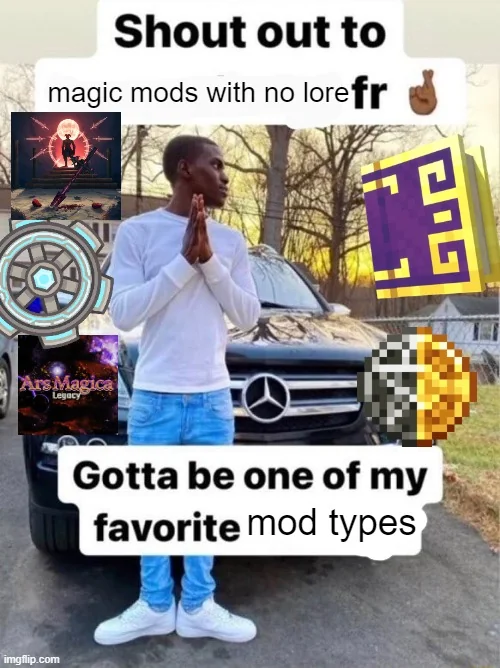

This is the idea playground, where my undeveloped ideas go to fight play until they can be given their own pages.
what if I learned sword crafting and made my own sword and practiced slashing and cutting suspended pieces of paper and got pretty good at it and felt accomplished both physically and mentally by having the discipline to take on a physical hobby


Deity: Sahab (Arabic for cloud)
Life is not better than the spiritual realm. Spirits go into our world and become people only to return here with eternal, peaceful nothingness. Within this world, one can do a lot to grow as a being, experience hardships and greatness, but it is not the ultimate place. https://www.reddit.com/r/trolleyproblem/comments/1g5k4qh/comment/lsc8d7n/?context=3
A 'spirit' (a being with consciousness, intelligence, but no worldly experience) made to experience 7 days in most people's shoes, would loathe it. Life may feel enjoyable due to our experiences in childhood, but adult life for many is mostly work. A spirit with no preconception that life is meaningful will not glean that ideology from experiencing adult life.
For many non-existence remains more desirable to existence.
My antinatalist argument in feminism: We ought to make the world a better place for everyone, because it is unethical to bring anyone into a world where the positives do not make up for the negatives.

9Minecraft advocacy?
Apparently everyone is switching to neoforge for any version beyond 1.20.4.
alloy system where you crush down ores into powders, combine powders, and then smelt that into alloys
new ores: (copper), zinc, tin
new alloys: bronze, brass, steel
a dark magic mod
maybe in order to get magical ingredients, you must grow regular crops on evil soil?
 reddit post

 src
src
I'm making MichelleTech, a shoddy mishmash of an attempt at learning modding.
Hemp (crop + item) (used for rope, chemicals, and THC extract)
I think I also wanna add trams or some form of fast transport
power/wiring system
different kinds of reactors (Star Reactor, takes in star matter blocks, which
are a type of block that when placed immediately explode violently)
Arc Crucible (need power): input: ingots to change percentage and output amount
50% copper 50% tin => 5x bronze ingot
80% tin 20% gold => 10x useless slag ingot
centrifuge: hemp + water bottle = THC extract
centrifuge: THC extract + pork = weed gummy
 src
src
this version uses babric. I think modding for this would be cool just for how simple of a foundation it is, but honestly I feel like the charm could fade quickly without the substance of later versions
Minecraft has been ruined with corporate bloat. I intend to save it.
Once I find out how, I will mod for 1.7.10, the best version of Minecraft (nostalgic, mostly good non-bloat features, and popular for modding).
[Forge mod template?] [Forge setup tutorial video?]
I think making friends over modding would be fun, since I like participating in the community. Each mod will probably have their own Github, given it's a big enough project to need that kind of version control.
I'm gonna make the Mo' Picks mod and add. dirt pickaxe